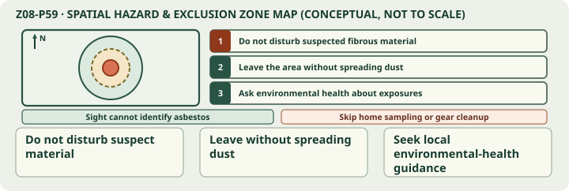

Z08-P59 · Rocks, minerals and materials · New manuscript
Naturally Occurring Asbestos and Elongated Mineral Fibers
Recognize potential asbestiform mineral habitats and enforce strict non-disturbance rules in iron-formation and ultramafic rock zones.
When it applies · Northern Minnesota iron formations, serpentinite, greenstone belts, and fibrous mineral veins.
Equipment · Non-contact camera and map only.

Actions
- Recognize that naturally occurring asbestos and elongated mineral fibers occur in certain metamorphic, ultramafic, and northern iron-formation bedrock units.[R07, R20]
- Leave any rock showing silky, woolly, needle-like, or matted fibrous veins completely untouched because visual inspection cannot verify whether fibers are regulated asbestos.[R07]
- Avoid kicking up dry dust on unimproved trails or mine waste piles in fibrous-mineral districts, and wash dusty boots and gear outdoors with water.[R07, R14]
Failure recognition · Collecting pretty fibrous green or white mineral veins or hammering iron-formation waste rock releases persistent carcinogenic fibers into lungs and home clothing.[R07]
Verify · Suspect fibrous outcrops remain completely undisturbed and documented only from a safe non-contact distance.[R07, R19]
Stop or change course · Stop immediately and move upwind if fibrous mineral veins or dusty mine-waste exposures are encountered.[R07]
Evidence and editorial notes
- R07 · U.S. EPA · Learn About Asbestos and Naturally Occurring Mineral Fibers (2025)
- Section: Naturally occurring asbestos and fibrous minerals · Conditions: Outcrops, fibrous veins, serpentinite, and iron-formation rock
Support: Naturally occurring asbestiform mineral fibers pose severe inhalation risks if disturbed, broken, or abraded.
Limitations: Field sight alone cannot distinguish benign fibrous minerals from regulated asbestos; leave fibrous mineral veins undisturbed. · Conflicting evidence: None noted.
Editorial note: Mandatory Z08 mineral-fiber stop rule. · Specialist reviewer: Industrial hygienist and mineralogist
Primary source · checked 2026-11-25 - R14 · USGS · National Minerals Information Center and Mineral Commodities (Current web edition)
- Section: Metallic ores, sulfides, and heavy-metal mineral toxicity · Conditions: Unidentified metallic-luster minerals, tailings, or bright oxidized crusts
Support: Sulfide ores and metallic minerals can contain lead, arsenic, mercury, or copper compounds hazardous via dust or hand-to-mouth transfer.
Limitations: Do not taste, lick, burn, or process unidentified metallic or brightly crusted minerals; wash hands after handling. · Conflicting evidence: None noted.
Editorial note: Blocks hazardous mineral extraction/handling. · Specialist reviewer: Geochemist and toxicologist
Primary source · checked 2026-11-25 - R19 · USGS · Collecting Rocks: Rock Classes and Mineral Property Basics (USGS GIP)
- Section: Specimen documentation, scale, and locality recording · Conditions: Documenting geological specimens for reference or museum review
Support: Recording locality, host formation, metric scale, fresh vs weathered surface, and non-destructive traits preserves scientific value.
Limitations: A photograph or hand sample without locality and scale rarely permits definitive identification of fine-grained rocks. · Conflicting evidence: None noted.
Editorial note: Defines Z08 specimen voucher protocol. · Specialist reviewer: Curatorial geologist
Primary source · checked 2026-11-25 - R20 · Minnesota DNR · Minnesota Geology and Glacial History Overview (Current web edition)
- Section: Iron-formation magnetism and compass deflection awareness · Conditions: Northern Minnesota iron ranges and mafic volcanic rock
Support: Magnetite-bearing iron formations and gabbro outcrops can visibly deflect magnetic compass needles locally.
Limitations: Deflection varies over short distances; cross-check bearings against terrain and non-magnetic cues rather than assuming uniform declination. · Conflicting evidence: None noted.
Editorial note: Cross-links Z08 geology with Z11 compass limits. · Specialist reviewer: Geophysicist and navigation specialist
Primary source · checked 2026-11-25
Source lineage · New manuscript (Z08 P16 toxicity hazards) · Classification · New manuscript.